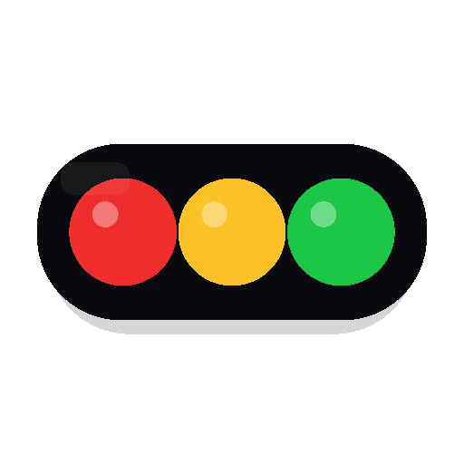
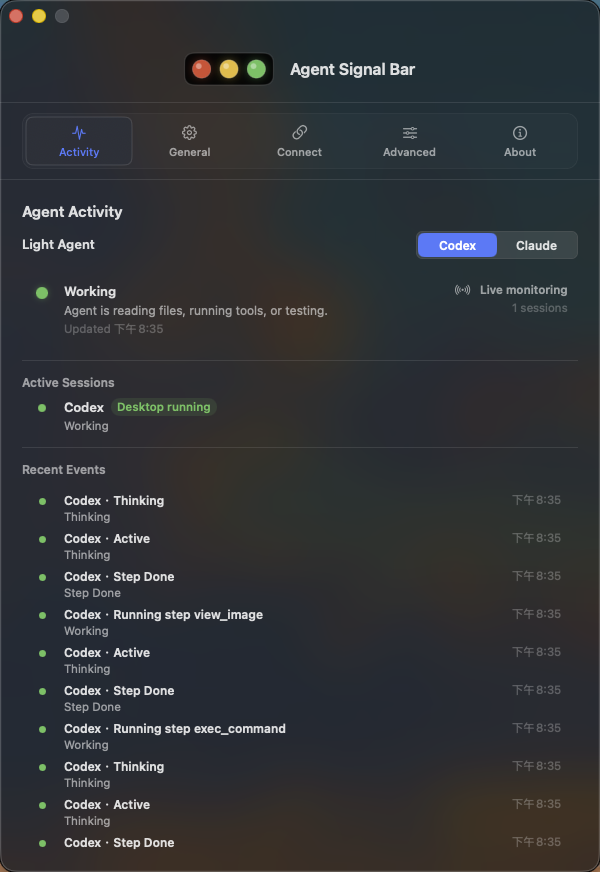
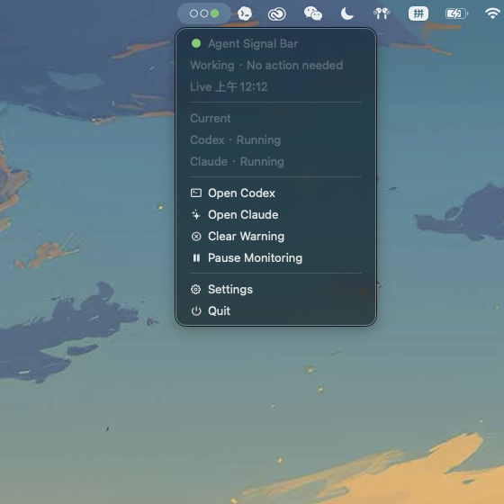

Homebrew
brew install --cask guan-ops/tap/agent-signal-bar
Installs the latest published release through the guan-ops Homebrew tap.

Agent Signal BarLocal status lights for AI agents on macOS.
Keep Codex Desktop, Claude Code, and local automation visible from the menu bar. Green means work is moving, yellow asks for attention, and red means you need to step in.
brew install --cask guan-ops/tap/agent-signal-bar
Free and open source. macOS 14+. Ad-hoc signed release builds today.
Agent Signal Bar turns noisy agent progress into a glanceable menu bar signal. It protects permission, blocked, and attention states so urgent work is not overwritten by normal background activity.

Status files, hook events, Codex Desktop session parsing, and diagnostics stay on your Mac. The app does not require a cloud account or telemetry backend to do its job.

Choose detailed panels when you want context, or a simple native menu when you only need quick actions.

Use Homebrew for the quickest install, download the DMG from GitHub Releases, or run the SwiftPM app directly from the checkout.
brew install --cask guan-ops/tap/agent-signal-bar
Installs the latest published release through the guan-ops Homebrew tap.
AgentSignalLight-local.dmg../script/build_and_run.sh --verify
Use the verification flag when you want startup checks after the build.